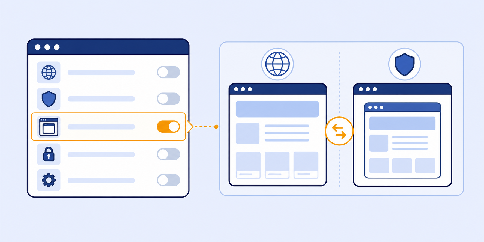
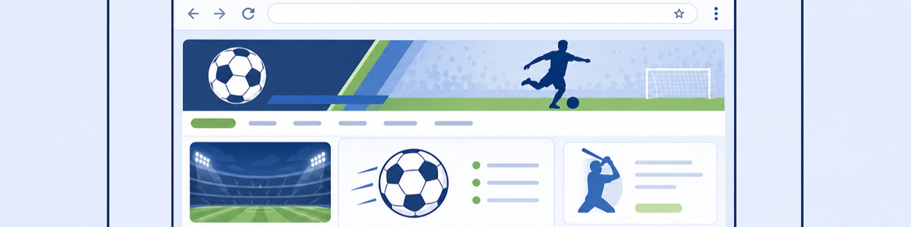

Lab 9: Managing Browser-In-Browser Isolation Experience
Scenario: In some situations, SOC or incident response teams need to investigate URLs in a fully isolated environment with the ability to navigate freely. The Browser-In-Browser (BiB) experience provides access to the complete isolated browser UI, including an editable URL bar, new tab functionality, and full browser controls — while still enforcing all ZIA policies on traffic from the isolation container.
BiB is not less secure — it is differently scoped. All traffic from the isolated browser still passes through ZIA. The editable URL bar lets SOC analysts navigate to any URL for investigation, but ZIA policies still block blocked categories from within the isolation container.
- The Browser-In-Browser experience exposes an editable URL bar. A user tries to navigate to gambling.com from within the BiB isolated session. What happens, and why?
- The default isolation experience is "Native browser experience" — the isolated page appears in the user's own browser without a visible isolation URL bar. When would you choose BiB over native experience?
- BiB is described as useful for SOC investigation workflows. What specific investigation tasks does BiB enable that a normal isolated session cannot?
Task 9.1: Review the Browser-In-Browser Isolation Profile
1 Inspect the TZTE BiB Isolation Profile
- In the ZIA Admin Portal, navigate to Administration › Browser Isolation.
- Click the eye icon next to the TZTE BiB profile.
- Click Next repeatedly until you reach the Isolation Experience tab.
- Note that Isolation Experience is set to Browser-in-browser experience.
- Click Close.
Note: The configurable Isolation Experience options are: "Native browser experience" (transparent, no visible isolation bar) and "Browser-in-browser experience" (full isolated browser UI with editable URL bar).

Task 9.2: Test Browser-In-Browser Experience
1 Access a Sports Site in BiB Mode
- On the Client PC VM, navigate to
https://www.skysports.comor any sports website. - The site loads in isolation and the original URL bar of the isolated browser is visible at the top of the page.
- Observe that you can edit the URL in the isolation browser's address bar.
- Click the + (new tab) icon next to the URL bar to open a new tab within the isolated browser.
Note: All traffic from within the BiB session is processed by ZIA. If you navigate to a blocked category (e.g., www.gambling.com) from the isolated URL bar, you will see a ZIA block page — the isolation container is not a bypass mechanism.
2 Review the Isolate Sports Policy (Optional)
- In the ZIA Admin Portal, go to Policy › URL & Cloud Application Control › URL Filtering Policy.
- Locate the Isolate Sports policy and review its settings.
- Note the URL category, Isolate action, and Isolation Profile used for sports sites.
